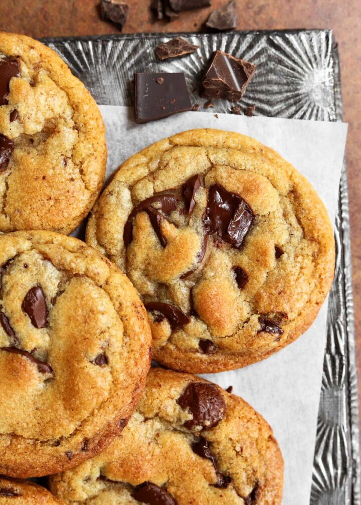

Home
Grandma Jiji's Chocolate Chip Cookies

Description
This recipe was given to us from a family friend named Grandma Jiji. Our family has had the recipe
for the last 20 years and we follow it every time we want chocolate chip cookies. The cookies taste
great and I think that they are healthier than the cookies that are sold at fast food restaurants or
at the store. Enjoy the recipe!
Ingredients
- 2 Cups of Flour
- 2 Tsp Baking Soda
- 1/4 Tsp Salt
- 1 Cup White Sugar
- 1 Cup of Pressed Brown Sugar
- 1 Cup All Vegetable Shortening
- 1 Cup Peanut Butter
- 2 Eggs
- 1 Tsp Vanilla Extract
- 1 package of 12 ounces of chocolate chips
Steps
- Mix together the flour, baking soda, and salt (No mixer needed)
- In a mixer, mix white sugar, brown sugar, all vegetable shortening, and peanut butter. Mix until creamy
- Add 2 eggs and vanilla onto the mixed ingredients in the mixer and mix well
- Lower the speed of the mixer once ingredients are mixed and add the flour, salt, and baking soda mix onto the mixed ingredients(brown sugar, white sugar, peanut butter, eggs, etc)
- Mix until ingredients are wet
- Add chocolate chips onto mix and fully mix
- Put the cookie dough in the refrigerator for at least 4 hours
- Flatten cookies on a tray
- Bake cookies for 11 minutes at 350°